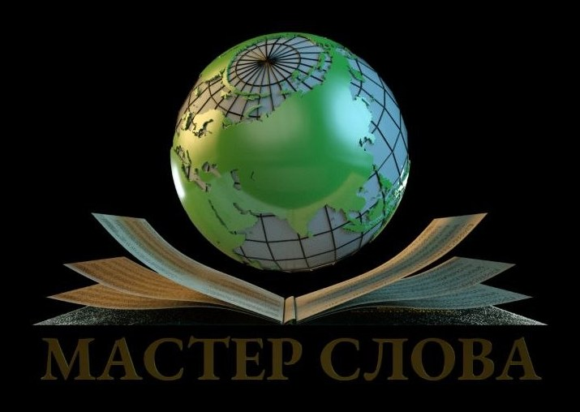

Не учим литературе — помогаем перейти от размышлений к творчеству.
Вам хочется писать стихи или создавать собственные рассказы? В Вашей голове рождаются интересные мысли, яркие образы и необычные сюжеты? Вы хотите воплотить свои идеи в литературных произведениях, но пока не знаете, с чего начать?
Проект «Мастер слова» поможет Вам сделать первые шаги в литературном творчестве: познакомиться с необходимыми инструментами и научиться создавать собственные произведения.
Выберите своё направление и начните творить!
Возможно, Вы давно мечтаете попробовать себя в поэзии или литературной прозе. Иногда Вы сочиняете отдельные строки, записываете интересные мысли, придумываете сюжеты или представляете будущие произведения.
Желание писать не всегда сопровождается пониманием того, с чего следует начать. Начинающему автору бывает трудно разобраться в литературных инструментах, найти подходящие слова и воплотить собственные идеи в художественной форме.
Возможно, Вы сталкиваетесь с такими вопросами:
Подобные вопросы совершенно естественны для человека, который только начинает творческий путь.
Ваше желание писать уже может стать первым шагом к литературному творчеству. «Мастер слова» поможет Вам сделать следующие шаги.
Проект «Мастер слова» объединяет два направления творческих тренингов. Каждое направление посвящено определённому виду литературного творчества и помогает начинающим авторам освоить его основные инструменты.
Откройте для себя мир стихотворного творчества!
Направление «Шаг в поэзию» предназначено для тех, кто хочет научиться выражать свои мысли и чувства в стихах, создавать художественные образы и осваивать основы стихосложения.
Программа творческих тренингов познакомит Вас с инструментами поэтического творчества и особенностями построения стихотворений. Практические задания помогут Вам освоить необходимые приёмы и перейти к созданию собственных стихов.
Ваши мысли и чувства могут стать началом поэтического произведения.
Сделайте первый шаг к написанию собственных рассказов!
Направление «Шаг в прозу» предназначено для тех, кто хочет придумывать литературные истории, создавать интересные сюжеты и воплощать свои идеи в художественной прозе.
Программа творческих тренингов познакомит Вас с основами построения рассказа, особенностями работы над сюжетом и персонажами. Практические задания помогут Вам освоить основные приёмы создания литературных историй.
Ваши идеи могут превратиться в увлекательные литературные рассказы.
Проект «Мастер слова» помогает перейти от знакомства с литературными инструментами к самостоятельному творчеству. Программы тренингов объединяют необходимые знания, практические задания и последовательное освоение творческих навыков.
В процессе участия в творческих тренингах Вы сможете:
Каждый этап тренингов направлен на достижение конкретного творческого результата. Главным результатом станет Ваша способность самостоятельно создавать литературные произведения.
В основе проекта «Мастер слова» лежат три главные идеи. Эти идеи определяют содержание творческих тренингов и отношение к начинающим авторам.
Проект направлен на практическое освоение литературного творчества. Участники знакомятся с необходимыми инструментами и учатся применять их при создании собственных произведений.
Для начала творческого пути Вам не требуется заранее считать себя поэтом или писателем. Желание попробовать себя в литературном творчестве и готовность работать над собственными произведениями станут хорошей отправной точкой.
Знания приобретают особую ценность тогда, когда помогают воплощать творческие замыслы. Практические задания позволяют постепенно освоить необходимые навыки и применять их в самостоятельной работе.

Эрик Хват
Основатель и автор проекта · Ведущий творческих тренингов
Автором проекта «Мастер слова» является Эрик Хват. Он разработал концепцию проекта, программы творческих тренингов, методические материалы и практические задания для обоих направлений.
Главная идея проекта заключается в том, чтобы сделать литературное творчество доступным для людей, которые хотят начать писать, но пока не знают, как перейти от желания к самостоятельной творческой работе.
Особое внимание в проекте уделяется творческим возможностям человека, развитию самостоятельности и практическому освоению литературных инструментов.
Эрик Хват ведёт творческие тренинги по обоим направлениям и сопровождает участников на пути к созданию собственных произведений.
Каждое литературное произведение когда-то начиналось с первой мысли, первого слова или небольшой творческой задумки.
Для начала творческого пути Вам не нужно ждать особого момента, абсолютной уверенности или необыкновенного вдохновения. Ваше желание писать уже может стать отправной точкой.
Выберите интересующее Вас направление, познакомьтесь с программой творческих тренингов и сделайте первый шаг к созданию собственных произведений.
«Мастер слова» поможет Вам открыть в себе автора!
Если у Вас остались вопросы о проекте или направлениях, оставьте контакт, и я отвечу.
Не пользуетесь Telegram? Написать на почту или в Telegram.